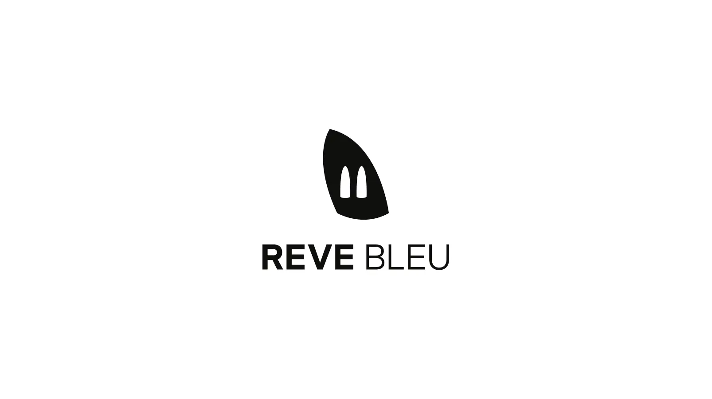
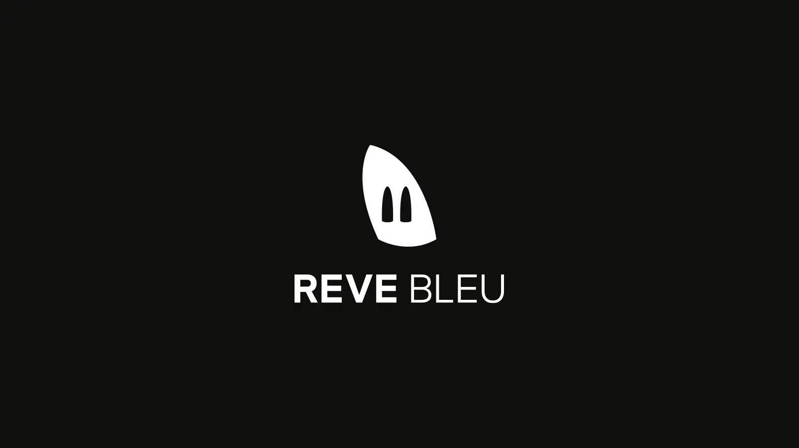
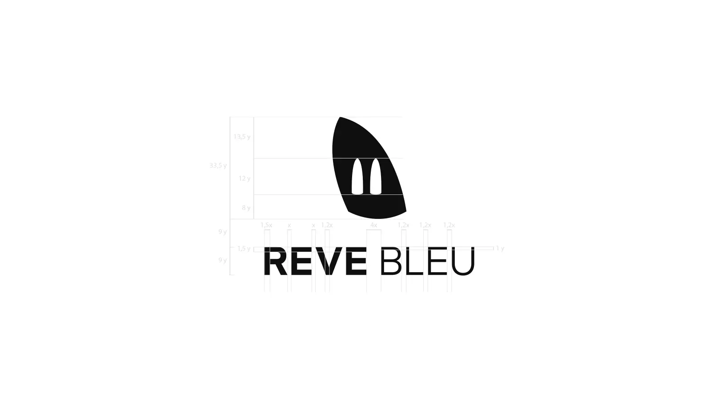
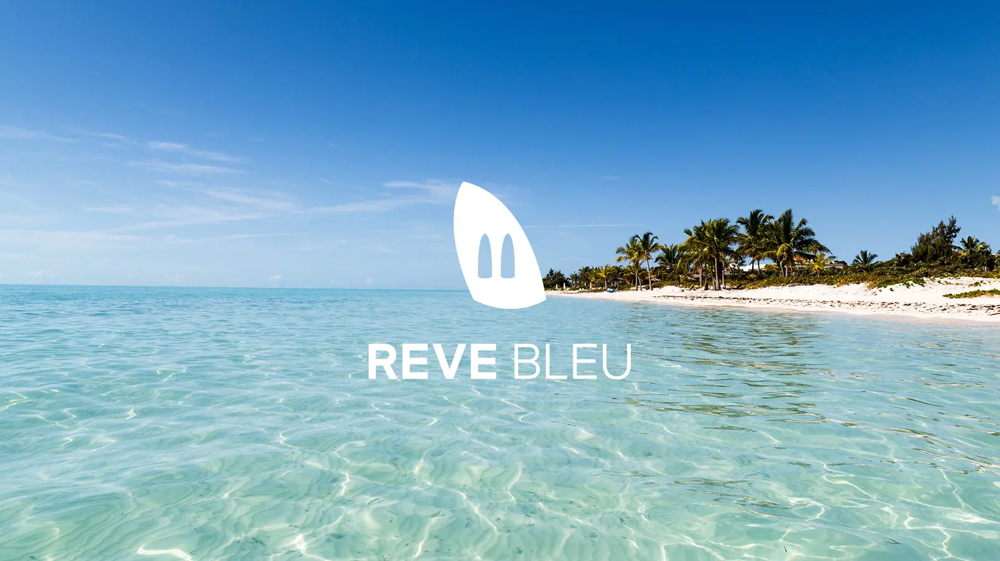
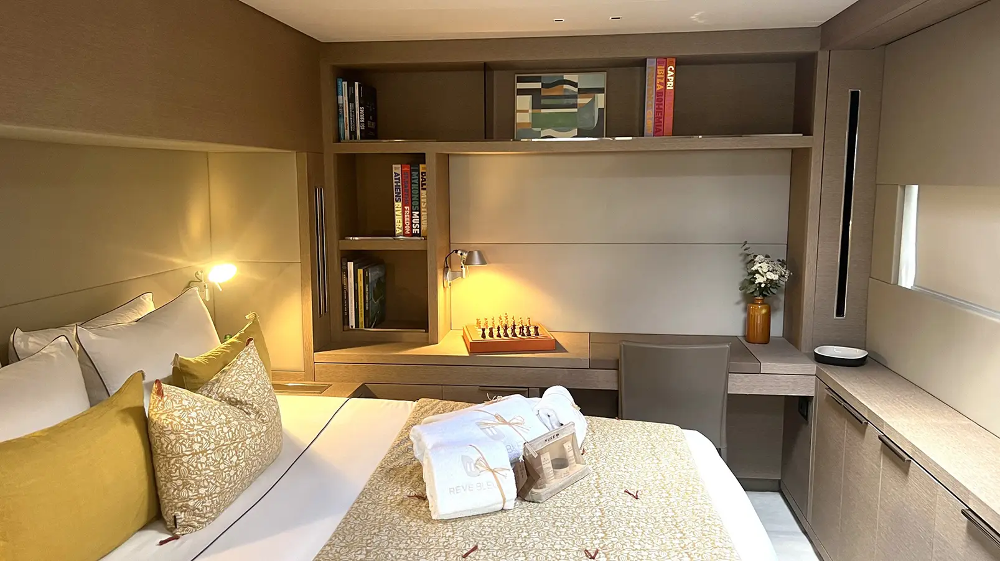
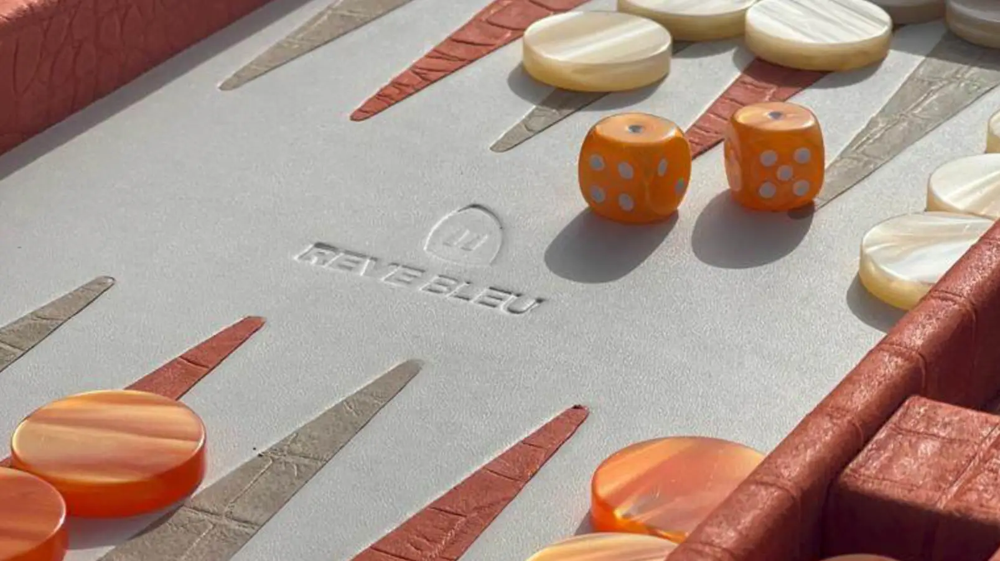
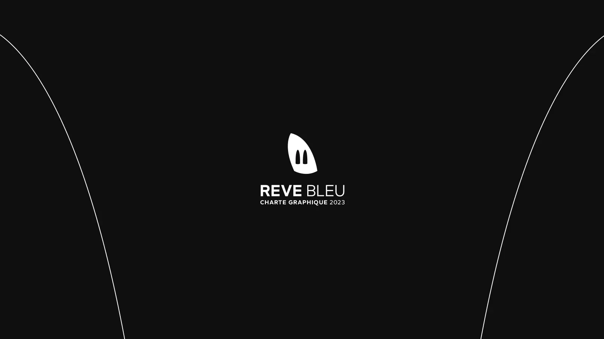
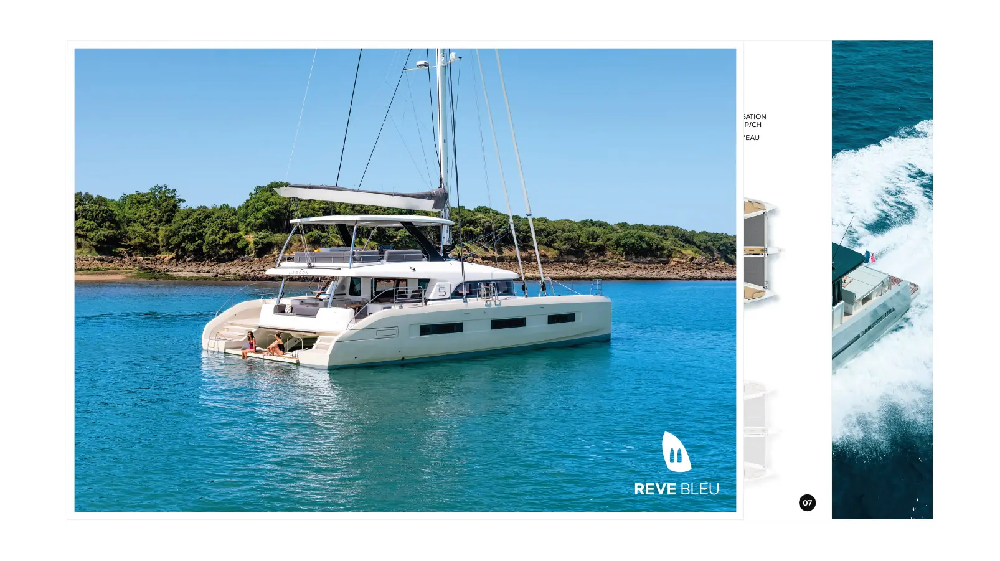
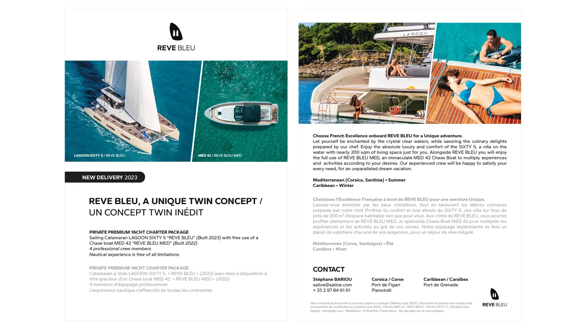

Reve Bleu — Identité Visuelle, Logo & Supports Print
Le catamaran "Reve Bleu" de 19,8m est un voilier pour le marché de la location de luxe. Il a été conçu pour accueillir confortablement jusqu'à 8 clients charter dans 5 suites. Le voilier est accompagné d'un bateau à moteur pour se déplacer librement une fois arrivé à destination.
Logo
Le logo a été pensé en intégrant le système de double bateaux sur une même location, le catamaran nous déplace en mer tandis que le bateau à moteur permet l'exploration. Le nom Reve Bleu n'a pas d'accent et malgré l'évidence du nom, le client ne souhaitait pas de bleu dans le logo.





Broderie serviettes de bain logo Reve Bleu (crédit photo Reve Bleu)

Embossage Plateau de jeu Reve Bleu (crédit photo Reve Bleu)
Charte graphique
Chaque identité visuelle a besoin de sa propre charte graphique pour être correctement utilisée, le travail du logo prend du temps, a besoin de beaucoup de réflexion et de recul, bien l'utiliser est donc une part importante pour conserver une cohérence globale sur le long terme.
Cliquez pour ouvrir le fichier PDF (8 pages).

Brochure
La brochure Reve Bleu devait présenter en quelques pages l'univers et les services proposés. La qualité des photographies prend évidemment une part importante car c'est elle qui présente le mieux ce que l'on vend : du rêve.
Cliquez pour ouvrir le fichier PDF (12 pages).

Flyer
Tiré directement de la brochure, le flyer devait être un condensé de cette dernière.
Cliquez pour ouvrir le fichier PDF (2 pages).
